Jitsi Meet
Vuonna 2020 Jitsillä on jo 10 miljoonaa kuukausittaista käyttäjää. Jitsin verkkoneuvotteluratkaisu erottuu helppokäyttöisyydellään: palvelu toimii suoraan selaimessa ilman erillisen ohjelman lataamista ja sitä voi käyttää ilman käyttäjätilin luomista.
Asentaminen
Asentaminen tehdään käyttöjärjestelmän komentokehotteella eli avaalla Terminal. Asentamista varten sinun on kirjauduttava joko pääkäyttäjän tunnuksella (root) tai tavallisena käyttäjänä käyttää järjestelmänvalvojan oikeuksia (sudo-komentoa).
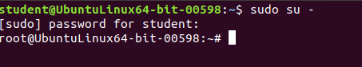Komennolla sudo su - vaihdettu pääkäyttäjään. avaa Terminal -> vaihda root käyttäjään sudo su - komennolla tai käytä sudoa komennoissa.
Suositeltua on käyttää palomuuria ja tällöin seuraavat palomuurin portit täytyy olla avoimena tulevalle liikenteelle.
- 80 TCP (HTTP)
- 443 TCP (HTTPS)
- 10000 - 20000 UTP
Voit tarkistaa palomuurin säännöt iptables -L -n -komennolla ja asettaa säännöt esimerkiksi ufw -palomuuriohjelmalle allow in-komennolla alla näkyvän kuvan mukaisesti.
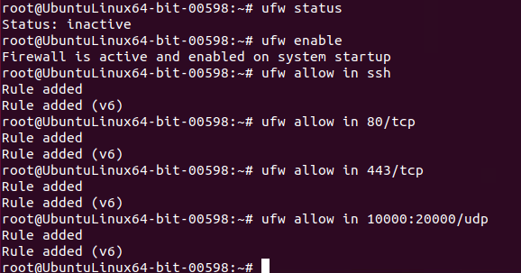 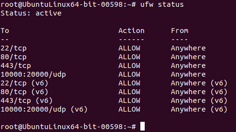Videotapaamiseen liittymisestä varten on suositeltavaa käyttää DNS nimeä. Mikäli sinulla ei kuitenkaan ole sellaista käytössäsi, voit käyttää myös tietokoneesi IP-osoitetta. Huomioi, että tällöin IP-osoitettasi käytetään aina videopuhelukeskusteluun liittyessä.
Ensin ladataan asennusavain Jitsin verkkosivuilta komennolla wget https://download.jitsi.org/jitsi-key.gpg.key. Kun lataus on valmis, tarkista asennusavainten tiedot komennolla gpg --search-keys dev@jitsi.org.
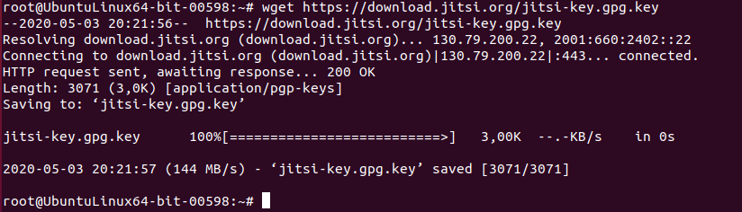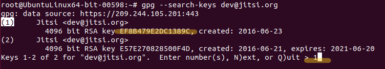
Valitse seuraavaksi 1. tai 2. asennusavain. Ennen kuin avain lisätään järjestelmän avainrinkiin, on hyvä tarkistaa että se on oikea eikä se ole vioittunut asennuksessa. Komennolla gpg --list-sigs dev@jitsi.org näet kaksi uutta avainta ja komennolla gpg --recv-keys näet kenelle avaimet on ohjattu. Damien Minkov ja Ingo Bauersach ovat osa kehitystiimiä, joten nyt olemme varmoja ettei virheitä ole ja että paketit, joita ollaan lataamassa ovat päteviä.
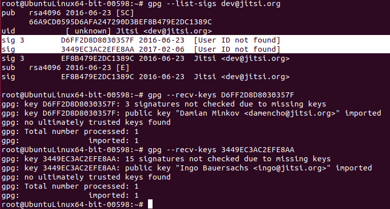Seuraavaksi täytyy lisätä pääsy Jitsin pakettivarastoon ja tämä hoituu näppärästi yhden rivin komennolla echo 'deb https://download.jitsi.org stable/' > /etc/apt/sources.list.d/jitsi-stable.list.
Ohjelma toimii selaimessa https-yhteydellä, joten sinulla täytyy olla toimiva SSL sertifikaatti nettipalvelimelle. Tässä on kolme vaihtoehtoa: maksullinen varmenne, ilmainen varmenne LetsEncryptistä tai itse kirjoitettu varmenne (self-signed certificate).
Jos sinulla on jo maksullinen sertifikaatti käytössäsi, ohjaa tiedostot kansioon /etc/ssl/ ja nimeä tiedostot uudelleen seuraaviksi:
- /etc/ssl/dnsname.crt --certificate file
- /etc/ssl/dnsname.key --key file
- Korvaa dnsname-kohta Jitsi asennuksessa käyttämälläsi dns nimellä.
Jos sinulla ei ole sertifikaattia käytössäsi, sinun on mahdollista luoda sellainen tämän asennuksen yhteydessä.
Asennus tehdään komennolla apt-key add jitsi-key.gpg.key.
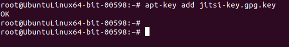Asennuksen jälkeen päivitetään pakettilistaus käyttöön komennolla apt update.
WWW-palvelimena voi toimia Nginx, Apache 2.0. tai Jetty. Jetty on oletuksena käytössä, mutta toisen ohjelman voi asentaa komennolla apt -y install nqinx/apache2.
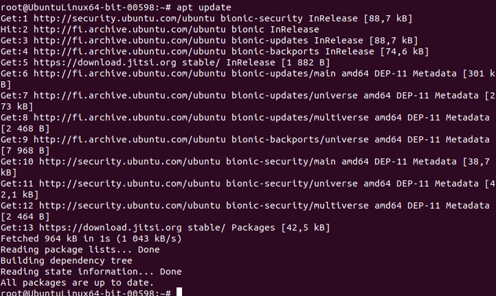Seuraavaksi asennamme paketin jitsi-meet komennolla apt -y install jitsi-meet, jolloin asentuu automaattisesti kaikki tarvittava.
Asennusohjelma kysyy verkkoaseman tunnusta, joten kirjoita joko palvelimesi DNS nimi tai tietokoneesi IP-osoite.
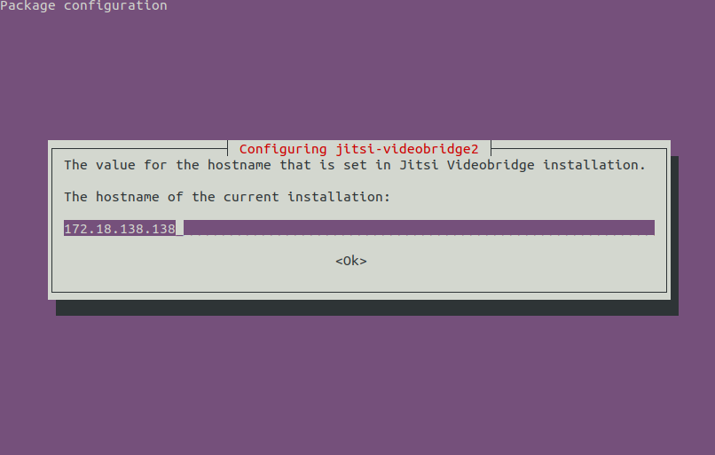Seuraavaksi voi valita sertifikaatin luomisen, jolloin asennuksen jälkeen ohjelman käyttöön saadaan LetsEncrypt sertikaatti. Tällöin suoritetaan komento niin, että ensin siirrytään oikeaan kansioon komennolla /urs/share/jitsi-meet/scripts/ ja tämän jälkeen tehdään asennus /usr/share/jitsi-meet/scripts/install-letsencrypt-cert.sh. Kun komento on ajettu, pyydetään antamaan sähköpostiosoite, jota tarvitaan LetsEncryptin ilmoituksia ja viestejä varten.
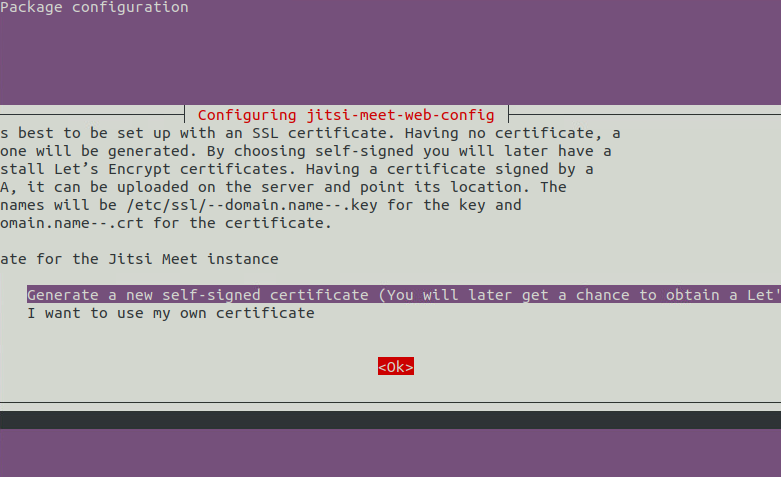 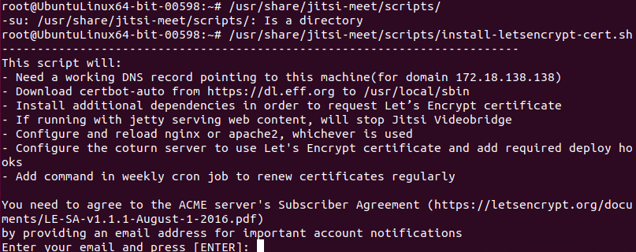Sitten ollaan valmiita! Nyt kun asennus on tehty, kokeile ohjelman toimivuutta. Avaa nettiselain ja syötä osoitekenttään, joko asennusvaiheessa antamasi DNS nimi tai tietokoneesi IP-osoite. Sinulle avautuu Jitsin sivu, jossa voit luoda keskusteluryhmän. Voit käyttää valmiiksi syötettyjä nimiehdotuksia tai laittaa minkä tahansa haluamasi nimen huoneelle. Näet aluksi vain oman videosi, jolloin voit tarkistaa, että hiukset on hyvin ja että kamera toimii. Voit kutsua muita keskusteluun linkittämällä heille saman URL-osoitteen/verkko-osoitteen.
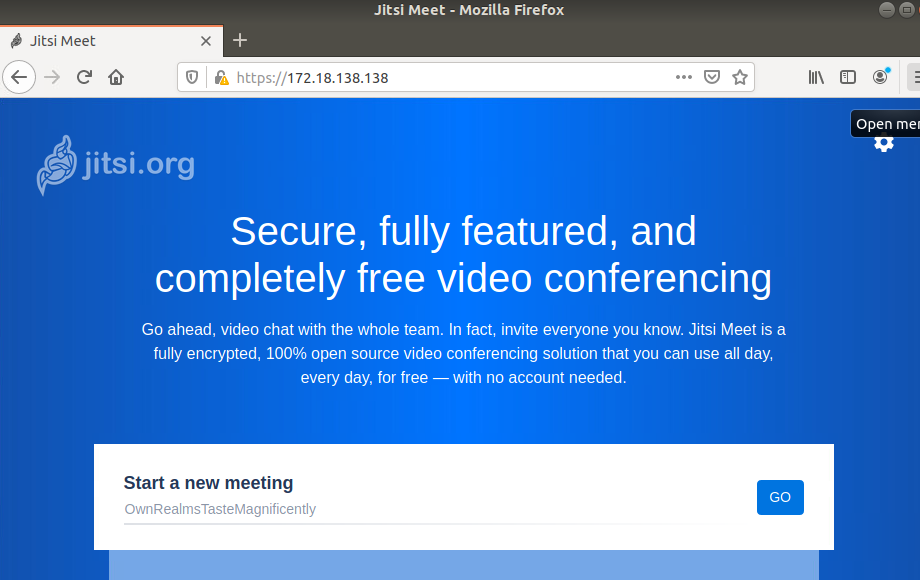 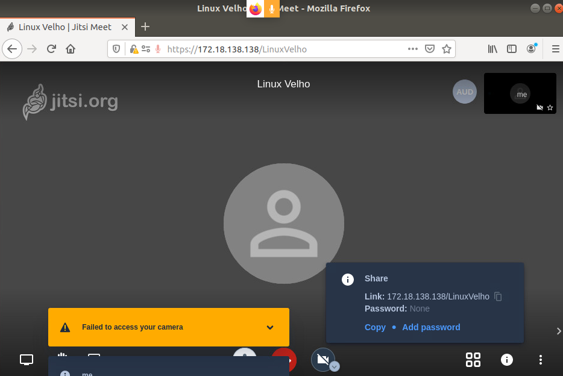 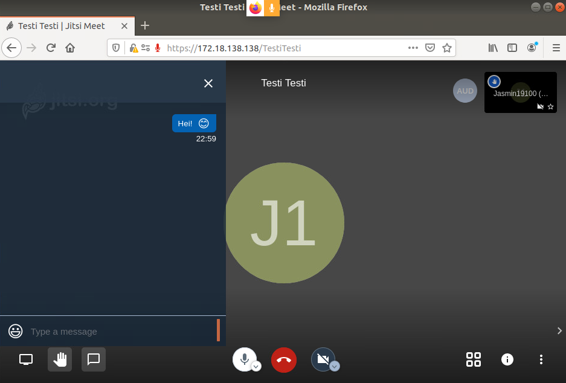Palvelu on todella helppokäyttöinen ja videopalaverin linkin saa erittäin näppärästi jaettua kenelle sitten haluaakaan. Keskusteluhuoneeseen liitytään osoittamalla selain Jitsi Meet -sivulle, kirjoittamalla haluamasi käyttäjänimi (tai valitsemalla tarjottu satunnainen nimi) ja napsauttamalla Siirry. Kun olet antanut Jitsille luvan käyttää verkkokameraasi ja mikrofonia (istunnot ovat DTLS / SRTP-salattuja), luodaan verkkolinkki ja puhelinnumero, joita käyttämällä voi keskusteluun liittyä. Voit jopa salata pääsyn keskusteluhuoneeseen lisäämällä neuvottelussalasanan. Kaiken kaikkiaan suosittelen Jitsi-palvelun käyttöönottoa!
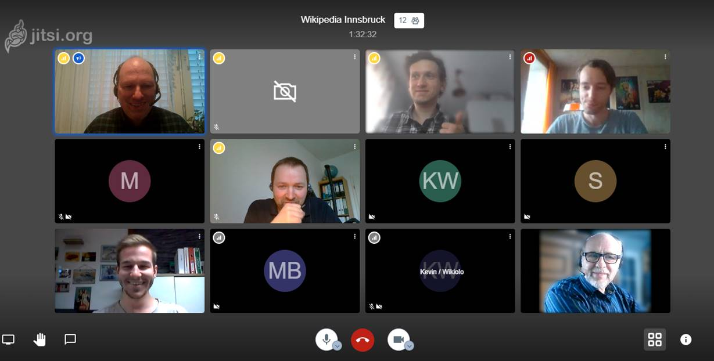